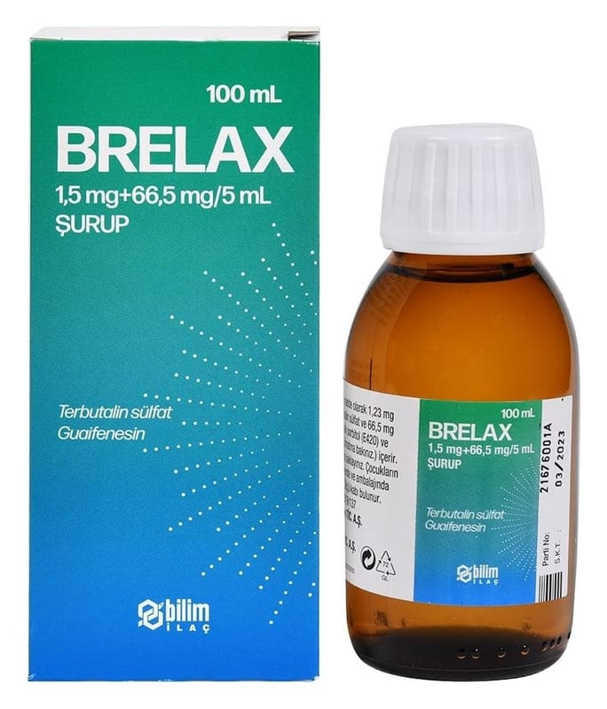

Brelax 1,5 mg+66,5 mg/5 ml Şurup, 100 ml

Ne için kullanılır
KT · Bölüm 1• BRELAX, terbutalin ve guaifenesin ilaçlarını içeren ve ağız yoluyla kullanılan bir çözeltidir. Çözelti yutulmalıdır. • 100 mL’lik şurup içeren amber renkli cam şişede, 5 mL’lik kaşığı ile birlikte sunulur.
Renksiz, berrak şurup görünümünde ve ahududu kokuludur.
• BRELAX
solunum yolunu genişleterek nefes almayı kolaylaştırır.
BRELAX
astımlı hastalarda veya diğer benzer durumlarda nefes daralması gibi belirtileri rahatlatmak için kullanılır. BRELAX
ayrıca solunum yolundaki balgamı yumuşatarak öksürüğü rahatlatır.
BRELAX, öngörülen solunum sorunlarının idame tedavisinde kullanılır.
BRELAX, astım veya diğer solunum hastalıklarının idame tedavisinde tek başına kullanılmamalıdır.
BRELAX’ı her gün kullanıyorsanız doktorunuz size aynı zamanda, akciğerlerinizdeki şişliğin ve inflamasyonun azaltılmasına yardımcı olan “inhale kortikosteroid” gibi başka bir ilaç tipi de reçete etmiş olmalıdır.
Ancak BRELAX, başlamış olan bir akut astım atağında rahatlama sağlamaz.